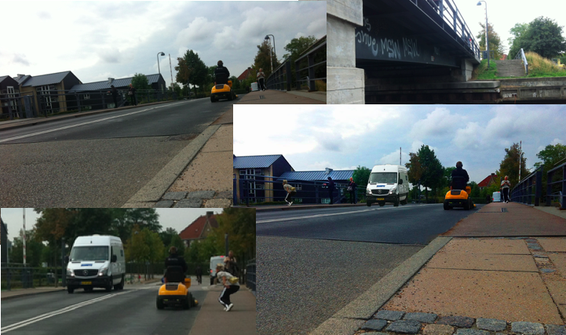

Behandling af bro billeder i Photoshop
En af de første opgaver vi fik stillet på studiet var at gå en tur rundt omkring havnen i København.Her skulle vi prøve at tage billede af broer og derefter lærer at efterbehandle dem i Photoshop.
Det var min første gang jeg fik lov til at ”lege” i Photoshop, derfor er det ikke de store og vilde effekter der er blevet brugt. Der er brugt mere tid på at gøre effekterne naturlige.
I opgaven skulle man foretage forskellige ting, fjern og tilføje elementer.
Der er klippet en varevogn ind der nu kommer kørende over broen. Jeg har fjernet et par af lygtepælene, udkrudt og andre urenheder.
Der er arbejdet med lysforholdet og hvordan man kan ændre en stemning på et billede. Derudover skulle vi beskærer samt oprette billedet så billedet fremstod vandret og i formatet 4:3.
